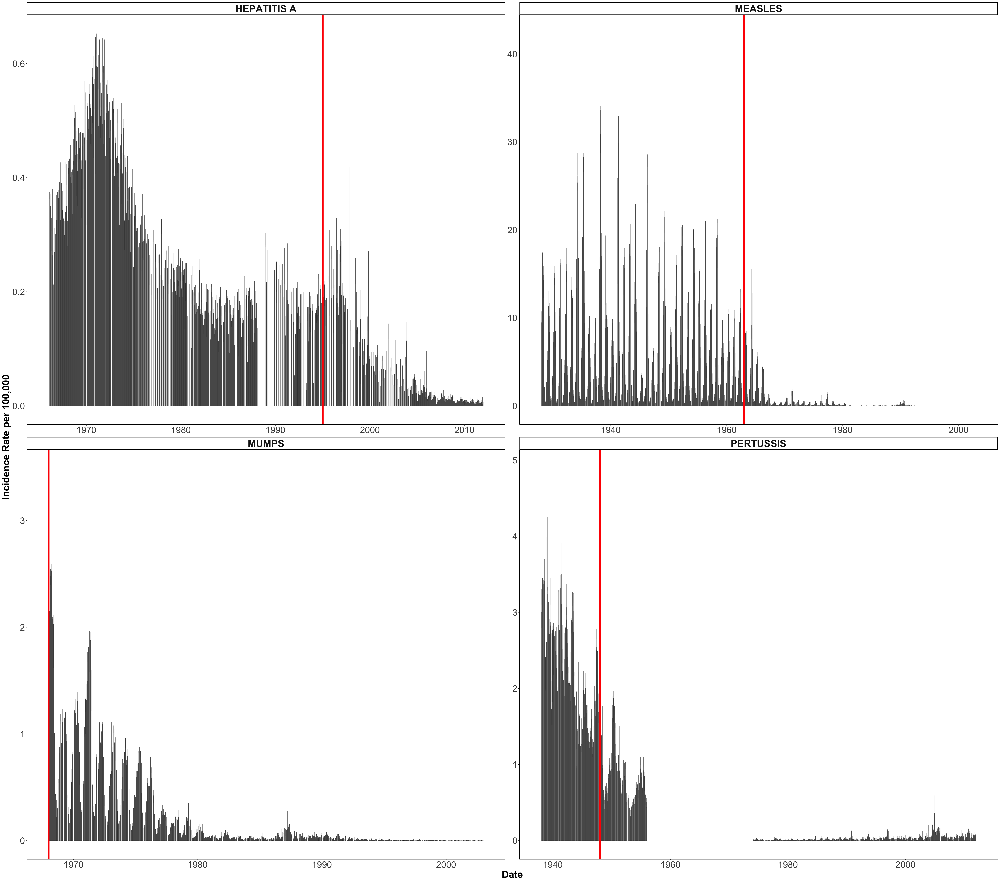
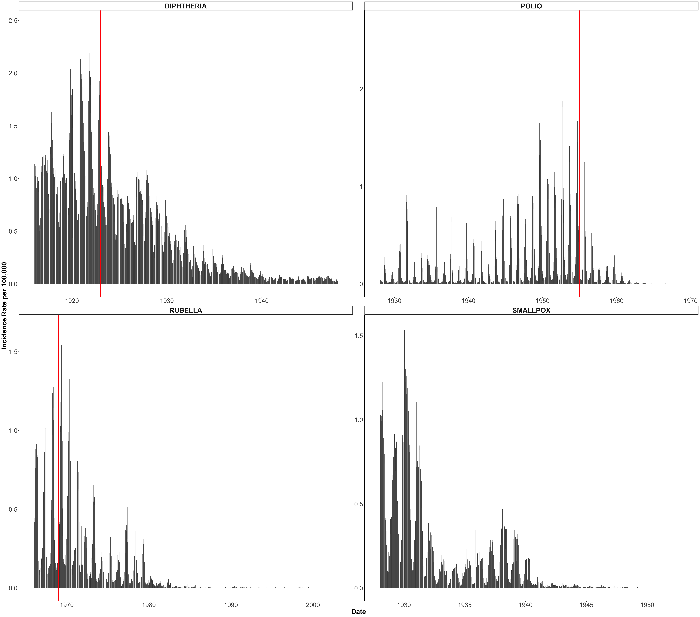

Tycho Data Level1 - National Incidence Rate
Data
Based on Tycho Data Version 1 from US MMWR and its predecessors that was digitized prior to the NEJM article, Van Panhuis et al. 2013. “Level 1” data: data used in the original NEJM publication mentioned above. Some processing and incidence rates were calculated, and some missing data were imputed (more information in the associated supplement)
Data are directly downloadable from Project Tycho Website or Zenodo
Census Data
Census data From:
Vaccination
Extracted from the NEJM article, Van Panhuis et al. 2013:
- Hepatitis A: 1995
- Measles: 1963
- Mumps: 1968 (1967, but for plotting reason change to 1968 (first date))
- Pertussis: 1948
- Polio: 1955
- Rubella: 1969
- Smallpox: NA, (1800s)
- Diphtheria: 1923
Process
Calculated by adding all the state or city (for Diphtheria) together (excluding US territories) per epi week and disease, and calculating the incidence rate per 100,000 people by calculating:
\[\frac{nbr\ of\ cases}{population\ size} \times 100,000\]
The original Tycho files contained two “outliers” peaks: one for Hepatitis A on the week 52 of 2010 and one from Smallpox on the week 36 of 1948.
For Hepatitis A, it seems to be a “print” error in the CDC source data. It has been corrected but the correction has not been integrated to Tycho yet. Please see the erratum in the source data, page 1710. The corrected table is also availalbe an the CDC.gov website. To fix that issue, we removed the associated week for Hepatitis A for all Tycho data
For Smallpox, it seems to be “data entry” error, correct table is available here. As the tables contains multiple disease information, the week 36 of 1948 has been removed for all disease on all Tycho data.
Visualization
Notes:
For Polio: “In the United States, the last cases of indigenously transmitted wild poliovirus disease were reported in 1979, and the last imported case of poliomyelitis caused by wild type poliovirus was reported in 1993” (from Chapter 12: Poliomyelitis, Manual for the Surveillance of Vaccine-Preventable Diseases. Adriana S. Lopez et ak, 2024)
For Smallpox: “By the time the Intensified Eradication Program began in 1967, smallpox was already eliminated in North America (1952) and Europe (1953). Cases were still occurring in South America, Asia, and Africa (smallpox was never widespread in Australia). The Program made steady progress toward ridding the world of this disease, and by 1971 smallpox was eradicated from South America, followed by Asia (1975), and finally Africa (1977).” (from CDC)
For Pertussis: “Weekly reports for pertussis were unavailable from 1955 to 1974”NEJM article, Van Panhuis et al. 2013
New York and New York City: “After 1963, New York City and Upstate New York were split into separate jurisdictions by the notifiable disease surveillance system” NEJM article, Van Panhuis et al. 2013. Since after 1963, both Upstate New York and New York City were reported as if they were states, they were originally treated as states for data reported via “state” reporting systems in version 1 of Project Tycho.
National Incidence
(legend inspired from NEJM paper)

